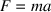

Index
1. PGE Input and Timers
- PGE is a Predictive physics Game
Engine
- it operates by predicting the
time of next collision rather than using a frame based
approach
2. PGE Screen and world coordinates 1m x 1m
3. PGE input
- PyGame keyboard and mouse events can
be utilised in PGE
- you can define a call back and
register it within the game
-
examples/breakout/breakout.py
...
pge.register_handler (myquit, [QUIT])
pge.register_handler (key_pressed, [KEYDOWN])
pge.register_handler (mouse_hit, [MOUSEBUTTONDOWN])
...
4. Breakout input handler functions
examples/breakout/breakout.py
def finish_game ():
sys.exit (0)
def myquit (e):
print "goodbye"
finish_game ()
def key_pressed (e):
if e.key == K_ESCAPE:
myquit (e)
notice that the
PyGame Event object
e is passed into
myquit
5. Breakout mouse input
examples/breakout/breakout.py
def mouse_hit (e):
global gb
mouse = pge.pyg_to_unit_coord (e.pos)
if e.button == 1:
# left button
gb.put_xvel (gb.get_xvel ()-0.3)
elif e.button == 3:
# right button
gb.put_xvel (gb.get_xvel ()+0.3)
elif gb.moving_towards (mouse[0], mouse[1]):
# middle button
pos = gb.get_unit_coord ()
gb.apply_impulse (pge.sub_coord (mouse, pos), 0.4)
else:
# middle button
gb.put_yvel (gb.get_yvel ()+0.4)
notice a series of helper
function/methods exist mouse =
pge.pyg_to_unit_coord (e.pos)
- mouse is a unit vector
[x,y] containing the current mouse
position
- x and y are in the PGE world range
0.0 to 1.0
pos = gb.get_unit_coord
() -
pos is a unit vector containing the
gold ball position
we can test whether an object
is moving towards a position using
mouse = pge.pyg_to_unit_coord (e.pos)
if gb.moving_towards (mouse[0], mouse[1]):
...
6. Newton’s laws of motion
- he stated
three physical laws that, together, laid the foundation for
classical mechanics
- describe the relationship between a
body and the forces acting upon it
- describe its motion
in response to those forces
7. Summary of the First law
- in an inertial
reference frame, an object either remains at rest or
continues to move at a constant velocity, unless acted upon
by a net force
8. Summary of the Second law
- in an inertial
reference frame, the vector sum of the forces F on an object
is equal to the mass m of that object multiplied by the
acceleration a of the object:

9. Summary of the Third law
- when one body
exerts a force on a second body, the second body
simultaneously exerts a force equal in magnitude and
opposite in direction on the first body
- these three
laws of motion were first compiled by Isaac Newton in his
Philosophiae Naturalis Principia Mathematica (Mathematical
Principles of Natural Philosophy), first published in 1687
- Newton used them to explain and investigate the motion
of many physical objects and systems
10. Adding energy into the PGE world
- one of the
considerations in building a game engine, is how to
introduce new energy into the simulation
- you need to be
careful, too much and objects become chaotic
- too little and the objects are starved
of motion
- the amount of energy depends whether
the object collisions are elastic or inelastic
- elastic
object collisions, energy is never lost
- inelastic
object collisions, energy is lost (modelling friction, heat,
noise energy)
11. Applying an impulse to an object
examples/breakout/breakout.py
gb.apply_impulse (pge.sub_coord (mouse, ball), 0.4)
applies an impulse to an
object an impulse is a non-physics term and in the game
engine it means a force applied instantaneously to an
object notice that in Newtons 2
nd law we see
the equation

the acceleration, implies
time

we don’t necessarily
have a change in velocity over some time
- we simply want to introduce energy
into the engine
we will see this same problem
when handling collisions - it is not
always necessary to model the world exactly to get the
desired effect in the game engine
we can also
instantaneously change an objects velocity
- violating Newtons 2
nd law
examples/breakout/breakout.py
gb.put_yvel (gb.get_yvel ()+0.4)
obviously we need to be
careful with these hacks, or the game will feel unnatural
12. Timers
- PGE allows
users to introduce timer callbacks
- here is how a simple
second count down might be implemented
examples/breakout/breakout.py
def timer (event = None, unused = None):
global seconds_left, previous
if seconds_left >= 0:
pge.at_time (1.0, timer)
s = "%d" % seconds_left
if previous != None:
previous.rm ()
previous = pge.text (0.8, 0.9, s, white, 100, 1)
seconds_left -= 1
which when called from
main() will display the current
number of seconds left and register itself to be called
1.0 seconds in the future
at_time returns an integer
id representing the timer created
this timer can be cancelled using at_cancel
(id) if it is cancelled, the callback
still occurs, your program could check cancellation by:
def timer (event = None, unused = None):
global seconds_left, previous
if seconds_left >= 0:
if event != None and event.was_cancelled ():
print "event was cancelled"
pge.at_time (1.0, timer)
s = "%d" % seconds_left
if previous != None:
previous.rm ()
previous = pge.text (0.8, 0.9, s, white, 100, 1)
seconds_left -= 1
13. Conclusion
- we have seen
how energy can be added into PGE
- we have also explored
some of the API calls surrounding
-
timer events
- mouse movement
- object movement and
how to detect if two objects are moving towards each other
- next week we will examine how the an application
can interact with collisions
Index
1. PGE Input and Timers
2. PGE Screen and world coordinates 1m x 1m
3. PGE input
4. Breakout input handler functions
5. Breakout mouse input
6. Newton’s laws of motion
7. Summary of the First law
8. Summary of the Second law
9. Summary of the Third law
10. Adding energy into the PGE world
11. Applying an impulse to an object
12. Timers
13. Conclusion
Index
This document was
produced using
groff-1.22.